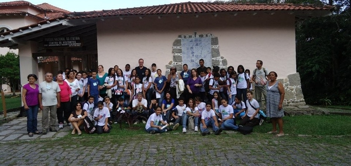

1° Oficina Prática do município de Resende - RJ
16/07/2013

No dia 6 de abril de 2013 foi realizada a "1° Oficina Prática do Programa Agenda Água na Escola" do município de Resende no Parque Nacional de Itatiaia.
A programação foi composta por dinâmicas de interpretação, palestras, atividades de campo e coleta para análise de água com os Ecokits do programa.
O evento contou com a presença dos representantes parceiros: do Parque Nacional de Itatiaia, da Agência de Meio Ambiente - AMAR, do Centro de Referência de Educadores Ambientais de Resende - CREAR e da Indústria Nuclear de Resende - INR, contou ainda com a presença da Coordenadora Geral do Programa, Fátima Casarin e a Coordenadora Regional da RH - Médio Paraíba do Sul, Vera Lúcia Teixeira (NVNV) e sua equipe, juntamente com os alunos Jovens Gestores Ambientais das escolas municipais de Resende: Escola Municipal Noel de Carvalho, Escola Municipal Professor Carlinhos e a Escola Municipal Hetelvina Carneiro participantes do programa.
Para mais informações e registros fotográficos Curta nossa página no facebook
"Nós cuidamos da água todos os dias"
A programação foi composta por dinâmicas de interpretação, palestras, atividades de campo e coleta para análise de água com os Ecokits do programa.
O evento contou com a presença dos representantes parceiros: do Parque Nacional de Itatiaia, da Agência de Meio Ambiente - AMAR, do Centro de Referência de Educadores Ambientais de Resende - CREAR e da Indústria Nuclear de Resende - INR, contou ainda com a presença da Coordenadora Geral do Programa, Fátima Casarin e a Coordenadora Regional da RH - Médio Paraíba do Sul, Vera Lúcia Teixeira (NVNV) e sua equipe, juntamente com os alunos Jovens Gestores Ambientais das escolas municipais de Resende: Escola Municipal Noel de Carvalho, Escola Municipal Professor Carlinhos e a Escola Municipal Hetelvina Carneiro participantes do programa.
Para mais informações e registros fotográficos Curta nossa página no facebook
"Nós cuidamos da água todos os dias"